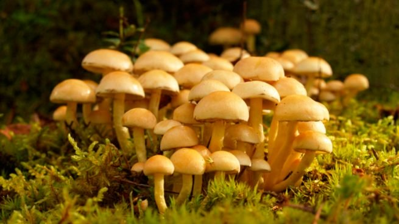
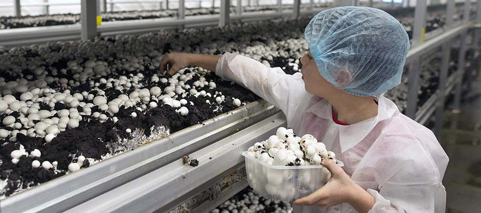

Los hongos en la gastronomia
Entre los hongos macroscópicos, que son los carnosos; están los hongos de sombreritos: los comestibles, los venenosos, los alucinógenos, y los de repisas en los troncos entre otros. Asimismo, entre las especies de los hongos más reconocidas son, Agaricus bisporus (champiñón), Pleurotus ostreatus (champiñón ostra u orellana) y Lentinula edodes (hongo shiitake).
Los países que por tradición cultivan hongos comestibles
Hay países que incluyen en su gastronomía tradicional los hongos que son comestibles para la humanidad; por la misma razón, se empeñan también en cultivarlos. De lo anterior, los países que más consumen hongos son: México, China, Japón, Indonesia y Tailandia. Por otro lado, los que más cultivan champiñones del continente europeo son: Francia, Inglaterra, Holanda; y en América, Canadá, Estados Unidos y Argentina. Le puede interesar: Hongos, plaguicidas naturales Entre las especies de mayor demanda en el mercado internacional; son los champiñones, trufas y gírgolas. Cabe destacar: aproximadamente de 2 mil de las 10 mil especies conocidas mundialmente de hongos macroscópicos, han sido considerados comestibles para los humanos, según afirma Agricultura de Las Americas. Las trufas, son hongos que a diferencia de muchos, crecen debajo del suelo. Entre los tipos más importantes son: la trufa negra y la trufa blanca. Son consideradas como un “aromatizante natural” por excelencia; y además, es muy utilizada para preparar distintos platos. Por otro lado, las gírgolas son el tipo de hongo apetecido por uso en la gastronomía exótica y por su alto valor nutricional; mismo que son ricos en selenio. El selenio es un elemento químico; y en el cuerpo humano realiza funciones del metabolismo. Las gírgolas, también poseen propiedades antioxidantes y anticarcinogénicas.
Los champiñones, es el tipo de hongo más conocido comúnmente y de consumo tradicional en las culturas asiáticas; ya que se relacionan con la larga duración de vida. Además, se han catalogado como el alimento que más cantidad de antioxidante que posee, según Agricultura de Las Americas.